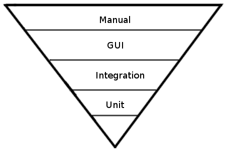

Quality Assurance using Behat and the Drupal Extension¶
Presented by: Melissa Anderson & Jonathan Hedstrom
Because Drupal has:¶
- Powerful value added by non-developers
- Complex module interactivity
- Frequent security updates with functionality changes
We need to:¶
- Know how users are expected to move through the application
- Know how the application is expected to respond
- Keep that knowledge in sync with changes
- Test that those user paths work
Because our applications are:¶
- dependent on third-party libraries
- integrated with third-party services
- highly visible
- globally accessible
We need to be able to:¶
- Develop rapidly
- Deploy frequently
Describe¶
Our goal is to describe application behavior in a way ...
Feature: Forum posts on front page
In order to see recent activity and news in the forums
As any user
I should be able to view links to the latest forum posts on the front page
Scenario: Forum Posts tab on front page
Given there is a new "Paid Drupal services" forum topic
And the cache is cleared
And I am on the homepage
When I follow "Forum Posts"
Then I should see the forum topic link
And I should see the link "More forums"

{kind=link}
{kind=link}
From a BDD Perspective¶
- Automatable functional tests are only a bonus
- They are not the primary goal of BDD
- They do not replace unit tests
- BDD is about
- Discovering what we need to build
- Ensuring what we build has value
- When we test, focusing our tests on the right things
Types of Testing¶
- Unit Testing (Classes or methods)
- Integration Testing (Multiple classes interacting)
- Functional Testing (Automated testing against acceptance criteria)
- GUI Testing (Automated testing in a graphical brower)
- Manual Testing (Human click-testing)
At the Core¶
- TDD tests tell programmers their code is working
- BDD tests ensure that the application is delivering business value
- http://www.tomslabs.com/index.php/2011/04/test-automation-strategy/
Dealing with Technical Debt¶
{kind=link}
http://www.matthewbussa.com/2011/01/evolution-of-automated-testing.html
{kind=link}
The Roots of BDD: Test-Driven Development¶
- Cycle:
- Add a test
- Run tests and see the new one fail
- Write some code
- Run the automated tests and see them succeed
- Refactor code
- Repeat
- Purpose
- Encourage simple designs
- Facilitate short release cycles
- Provide higher confidence in releases
Behavior-Driven Development¶
Behavior-driven development emerged from test-driven development, to answer these questions:
- Where do I start?
- What do I test?
- How much do I test in one go?
- What do I call the tests?
- How can I understand why a test fails?
Fundamental Principles of Story BDD¶
Ignorance¶
Ignorance is the biggest constraint in software development
—Dan North
Value¶
Every feature should have a measurable business value
Communication¶
Everyone on the team should have a common language to describe the site
Conversation¶
Having conversationsis more important thanCapturing conversationsis more important thanAutomating conversations—Liz Keough